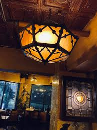
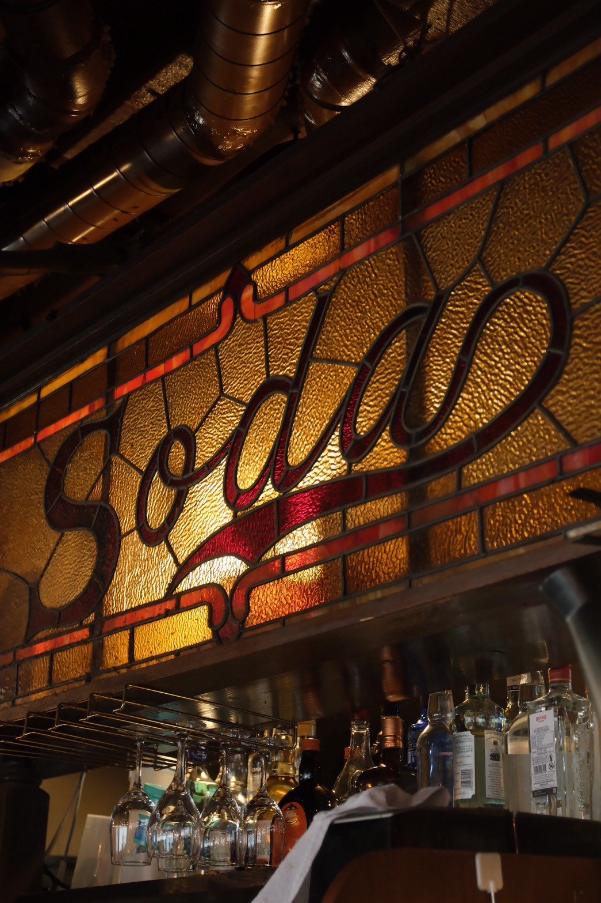
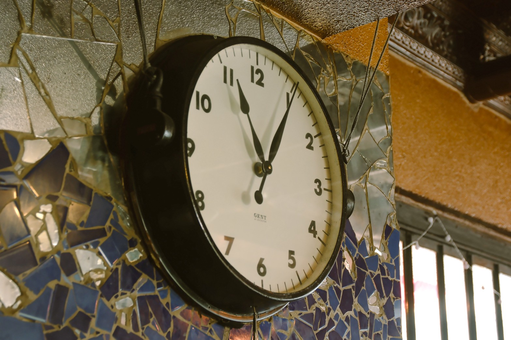
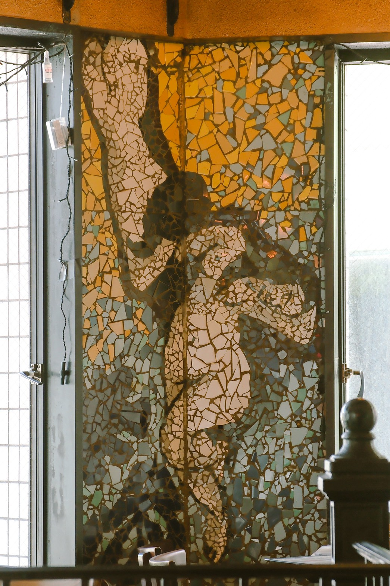
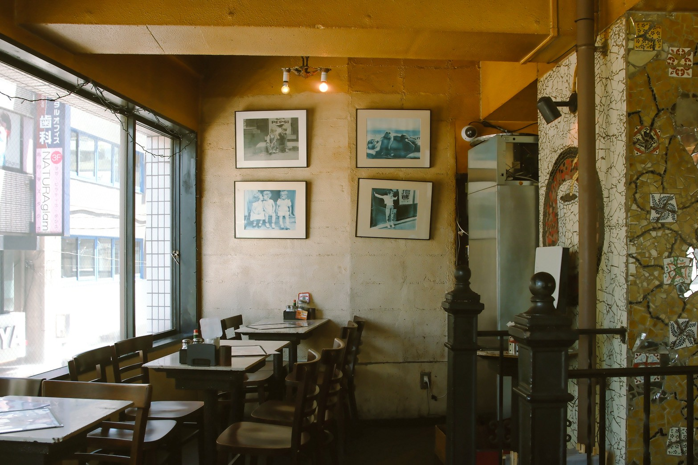
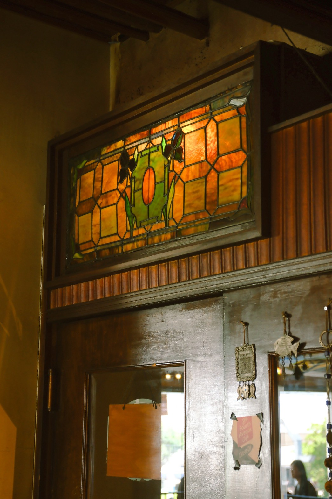

店内メインフロア
テーブル席
テレビドラマ「深夜の高円寺」（2023年・TBS系）第4話・第8話のカフェシーン。主人公たちが毎週集まる行きつけの喫茶店として繰り返し登場。昭和の香りが漂う内装が演出に寄与。
Detail
1986年7月30日。現在の高円寺南四丁目に、一軒のカフェがオープンした。
その名は「Chaya」。昭和の時代としては珍しい、緑とターコイズブルーとベージュのソファー席を配置した、モダンで近未来的なカフェだった。
 Koenji South 4-chome — 1986.7.30 Open
Koenji South 4-chome — 1986.7.30 Open
しかし創業者の藤村誠さんには、心の中に別の夢があった。
大学卒業後に留学したニューヨーク。特にマンハッタンで見たカフェやダイナーの空気感が、忘れられなかった。
あのにぎわい、あの温かさ、あの自由な空気感——いつか高円寺で、あんな店を作りたい。そんな想いが日に日に強くなっていった。
「いつか本当に
A dream of warmth and lightオープンから約2年。順調だったChayaを見ながらも、誠さんは大きな決断をする。
ニューヨークで買い付けたアンティーク家具、ステンドグラス、照明、ヴィンテージインテリア——それらを使い、マンハッタンのようなカフェを高円寺に作りたい。
当然、周囲は大反対。特にお父様とは激しく衝突した。あまりの反対に、生まれて初めての大喧嘩となり、殴られたそうです。
ニューヨークのようなカフェを高円寺に作りたいんだ！絶対にやる！！それでも誠さんは諦めなかった。
ニューヨークで買い付けた宝物たち

Soda stained glass Mosaic art
Mosaic art

Antique clock
Stained glass window Antique lamp
Antique lamp
反対を押し切り、ニューヨークからインテリアを買い付ける。莫大な時間と費用をかけて運び込み、店内を全面改装。
こうして誕生したのが、高円寺南四丁目の「Yonchome cafe」だった。
今も店内には、創業者自ら選び抜いたアンティークやステンドグラスが息づいている。当時は無謀だと言われた挑戦だったかもしれない。それでも自分の「好き」を信じて貫いた結果、Yonchome cafeは高円寺を代表するカフェの一つとして、多くの人に愛され続けている。
40年という節目は、ゴールではなく、
また新しいスタートです。
これからもこの場所で、変わらない安心と、新しい時間を重ねていきたい。Yonchome cafeは、これからも街と人に寄り添う店であり続けます。
Yonchome Cafe — Since 1986
Yonchome Cafe — Today
 mosaic
mosaic
 clock
clock
 stained glass
soda
stained glass
soda
テレビドラマ「深夜の高円寺」（2023年・TBS系）第4話・第8話のカフェシーン。主人公たちが毎週集まる行きつけの喫茶店として繰り返し登場。昭和の香りが漂う内装が演出に寄与。
Detail
映画「東京のよるに」（2024年・東映）のキーシーン。主人公と恋人が再会を果たすカフェとして使用。窓から差し込む夕光と木製テーブルが印象的なショットを生み出した。
Detail
ファッション誌「BRUTUS」（2024年4月号）の特集撮影。色とりどりのステンドグラスを背景に、ヴィンテージファッションのモデル撮影が行われた。
Detail高円寺駅南口から徒歩1分。二階のドアをあけてお越しください。